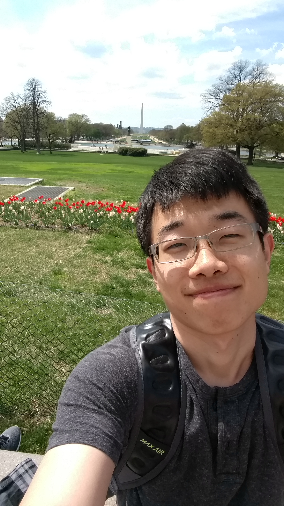

 Hi, I am Yanfei Tang. I am a research assistant in Physics department with Shengfeng Cheng, since late 2015 at Virginia Tech of Blacksburg. I graudated with a Ph.D degree on December 2018.
My research involves the molecular dynamics simulations of soft matter physics, extending from evaporation of colloidal thin films, capillary and wetting phenomena, polyelectrolytes complexation. Previously, I have been at Oak Ridge National Lab with Thomas Maier on integral inversion of Green's functions. Before that, I also worked on compuational condensed matter physics with quantum Monte Carlo simulations.